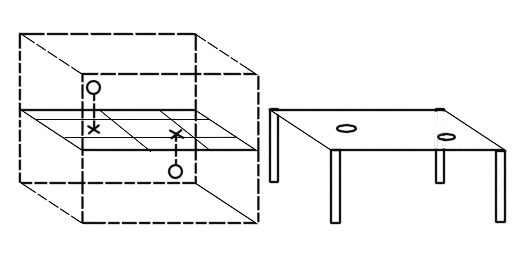
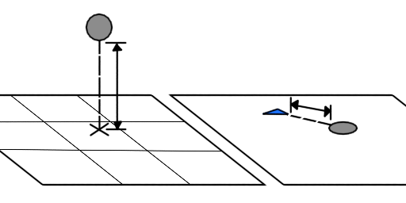

В данном варгейме имитируется привычное нам трёхмерное эвклидовое пространство. Чтобы показать его на столе, нужно сделать две вещи:
Во-первых, мы расположим в этом пространство плоскость. Не важно, как она повёрнута к нам - это будет плоскость "нулевой высоты".
Она же будет плоскостью стола.
Чтобы понять, как объект расположен на столе, нам надо будет провести в имитируемом пространстве перпендикуляр от него к условной плоскости.
В этой точке и будет располагаться миниатюра объекта, его маркер, либо любой другой отображающий его элемент.

Однако, описывая положение в пространстве указанным выше способом мы теряем одну важную деталь - высоту объекта над плоскостью.
Чтобы исправить ситуацию, в дополнение к репрезентации объекта на столе, мы к нему дополнительный жетон - маркер высоты.
Этот маркер имеет направление, которое всегда должно указывать на то, чью высоту он показывает. Расстояние от того объекта до маркера высоты показывает, как высоко объект расположен над плоскостью проекции.
На изображении ниже маркер высоты указан синим.
